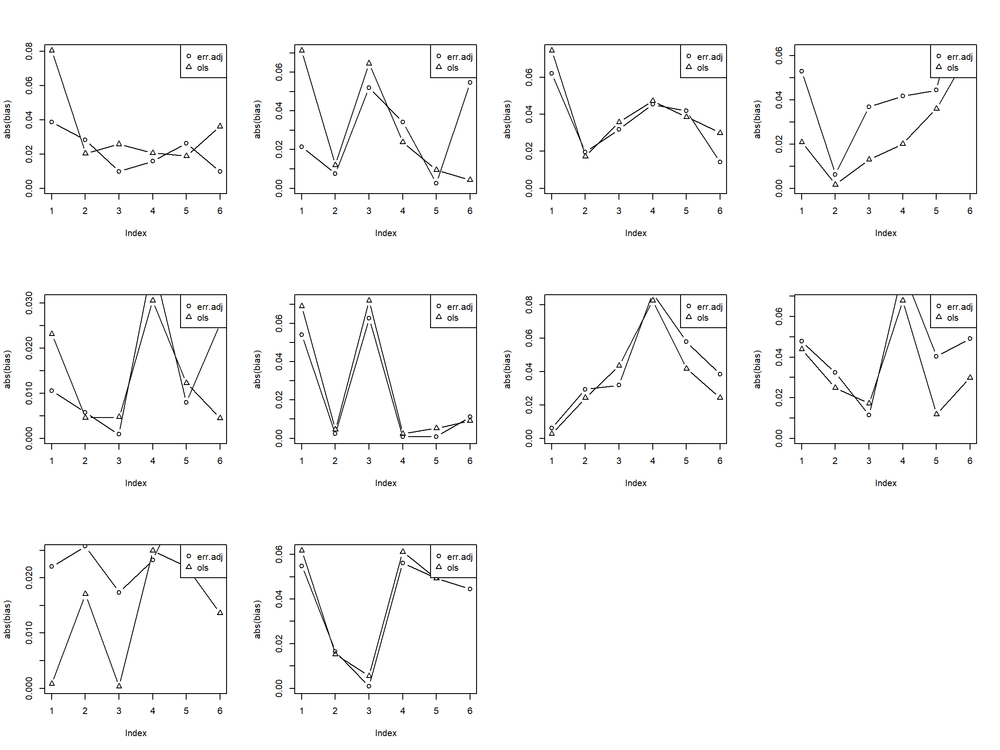

Last updated: 2021-07-22
Checks: 7 0
Knit directory: deconference/
This reproducible R Markdown analysis was created with workflowr (version 1.6.2). The Checks tab describes the reproducibility checks that were applied when the results were created. The Past versions tab lists the development history.
Great! Since the R Markdown file has been committed to the Git repository, you know the exact version of the code that produced these results.
Great job! The global environment was empty. Objects defined in the global environment can affect the analysis in your R Markdown file in unknown ways. For reproduciblity it’s best to always run the code in an empty environment.
The command set.seed(20200403) was run prior to running the code in the R Markdown file. Setting a seed ensures that any results that rely on randomness, e.g. subsampling or permutations, are reproducible.
Great job! Recording the operating system, R version, and package versions is critical for reproducibility.
Nice! There were no cached chunks for this analysis, so you can be confident that you successfully produced the results during this run.
Great job! Using relative paths to the files within your workflowr project makes it easier to run your code on other machines.
Great! You are using Git for version control. Tracking code development and connecting the code version to the results is critical for reproducibility.
The results in this page were generated with repository version cad5a48. See the Past versions tab to see a history of the changes made to the R Markdown and HTML files.
Note that you need to be careful to ensure that all relevant files for the analysis have been committed to Git prior to generating the results (you can use wflow_publish or wflow_git_commit). workflowr only checks the R Markdown file, but you know if there are other scripts or data files that it depends on. Below is the status of the Git repository when the results were generated:
Ignored files:
Ignored: .Rhistory
Ignored: .Rproj.user/
Untracked files:
Untracked: analysis/plot_cor.Rmd
Untracked: code/fast_matrixmult.cpp
Untracked: code/simulation/neuron/simu_neuron_result.R
Untracked: data/day30.h5
Untracked: data/day30.h5.zip
Untracked: data/neuron/
Untracked: data/pancreas/
Untracked: output/geneCor_DABulk_cpm.rds
Untracked: output/geneCor_Epen1Bulk_cpm.rds
Untracked: output/geneCor_FPPBulk_cpm.rds
Untracked: output/geneCor_P_FPPBulk_cpm.rds
Untracked: output/geneCor_SertBulk_cpm.rds
Untracked: output/geneCor_U_NeurBulk_cpm.rds
Untracked: output/geneCor_gtexpancreas_tpm.rds
Untracked: output/geneCor_neuronBulk_cpm.rds
Untracked: output/neuron/
Untracked: output/simu_correlation_betahat_d500_neuron.rds
Untracked: output/simu_correlation_checkavariance_betahat_d500_xin_est_cor_100bulkforcor_alpha05_addjack.rds
Untracked: output/simu_correlation_checkavariance_betahat_d500_xin_hc3.rds
Untracked: output/simu_correlation_checkavariance_betahat_d500_xin_hc3_only_pos_ecov.rds
Untracked: output/simu_correlation_checkavariance_betahat_d500_xin_jack.rds
Untracked: output/simu_correlation_checkavariance_betahat_d500_xin_trueb.rds
Untracked: output/simu_correlation_checkavariance_betahat_d50_xin_est_cor_100bulkforcor_alpha01.rds
Untracked: output/simu_correlation_checkavariance_betahat_d50_xin_est_cor_100bulkforcor_alpha05.rds
Untracked: output/simu_correlation_checkavariance_betahat_d50_xin_est_cor_100bulkforcor_alpha05_addjack.rds
Untracked: output/simu_correlation_checkavariance_betahat_d50_xin_est_cor_100bulkforcor_alpha05_addjack_weighted.rds
Untracked: output/simu_correlation_checkavariance_betahat_d50_xin_est_cor_100bulkforcor_thresh.rds
Untracked: output/simu_correlation_checkavariance_betahat_d50_xin_est_cor_100indi.rds
Untracked: output/simu_correlation_checkavariance_betahat_d50_xin_est_cor_100indi_alpha03.rds
Untracked: output/simu_correlation_checkavariance_betahat_d50_xin_est_cor_10indi.rds
Untracked: output/simu_correlation_checkavariance_betahat_d50_xin_est_cor_10indi_alpha03.rds
Untracked: renv.lock
Untracked: renv/
Unstaged changes:
Modified: .Rprofile
Modified: analysis/partial_weights.Rmd
Modified: analysis/simu_correlation_checkvariance_real.Rmd
Modified: analysis/simu_correlation_est_cor.Rmd
Modified: code/deconference_estfunc.R
Modified: code/simulation/neuron/partial_weights.R
Modified: code/simulation/neuron/simu_neuron.R
Modified: code/unadjusted_lm.R
Note that any generated files, e.g. HTML, png, CSS, etc., are not included in this status report because it is ok for generated content to have uncommitted changes.
These are the previous versions of the repository in which changes were made to the R Markdown (analysis/neuron_simu_real_remove_outlier.Rmd) and HTML (docs/neuron_simu_real_remove_outlier.html) files. If you’ve configured a remote Git repository (see ?wflow_git_remote), click on the hyperlinks in the table below to view the files as they were in that past version.
| File | Version | Author | Date | Message |
|---|---|---|---|---|
| Rmd | cad5a48 | DongyueXie | 2021-07-22 | wflow_publish(“analysis/neuron_simu_real_remove_outlier.Rmd”) |
| html | 1a28ed4 | DongyueXie | 2021-07-15 | Build site. |
| Rmd | db9a2d6 | DongyueXie | 2021-07-15 | wflow_publish(“analysis/neuron_simu_real_remove_outlier.Rmd”) |
| html | 9804cc8 | DongyueXie | 2021-07-14 | Build site. |
| Rmd | 1a3c6e6 | DongyueXie | 2021-07-14 | wflow_publish(“analysis/neuron_simu_real_remove_outlier.Rmd”) |
| html | eb93bea | DongyueXie | 2021-07-14 | Build site. |
| Rmd | c9a04eb | DongyueXie | 2021-07-14 | wflow_publish(“analysis/neuron_simu_real_remove_outlier.Rmd”) |
In previous analysis, we found the mse is large, but after adding weights, it’s much smaller
source('code/deconference_main.R')
source('code/utils.R')
source('code/wols.R')
source('code/simulation/neuron/simu_neuron.R')
#source('code/simulation/simu_correlation_ult.R')
# remove genes
gene_name = readRDS('data/neuron/gene_name_20293.rds')
indis_ref = readRDS('data/neuron/indis_ref.rds')
indis_ref = indis_ref[match(gene_name,dimnames(indis_ref)[[1]]),,]
dim(indis_ref)
# remove individuals that has no or too few certain cell types
cell_ann = readRDS('data/neuron/cell_ann.rds')
indi_by_cell = table(cell_ann$donor_id,cell_ann$celltype)
indi_by_cell[,6] = indi_by_cell[,6] + indi_by_cell[,7]
indi_by_cell = indi_by_cell[,1:6]
colnames(indi_by_cell)[6] = 'U_Neur'
indi_to_use = names(which(rowSums(indi_by_cell>10)==6))
##
indis_ref_filter = indis_ref[,,match(indi_to_use,dimnames(indis_ref)[[3]])]
tt = apply(indis_ref_filter,3,rowSums)
ii = rowSums(tt>0)
gene_to_use = which(ii>=97)
gene_name_12406 = names(gene_to_use)
indis_ref_filter = indis_ref_filter[match(gene_name_12406,dimnames(indis_ref_filter)[[1]]),,]
X = apply(indis_ref_filter,c(1,2),mean,na.rm=TRUE)
V = t(apply(indis_ref_filter,c(1),function(z){(cov(t(z),use = 'complete.obs'))}))/dim(indis_ref_filter)[3]
h = rowSums((X%*%solve(crossprod(X)-matrix(colSums(V),ncol=6)))*X)
plot(h)
# remove genes whose h is larger than 0.2
rm.idx = which(h>0.2)
indis_ref_filter = indis_ref_filter[-rm.idx,,]
G = dim(indis_ref_filter)[1]
corGene_idx = readRDS("data/neuron/corGene_idx_lower_cpm_alpha005.rds")
library(Matrix)
A.indicator = sparseMatrix(i = corGene_idx[,1],j = corGene_idx[,2],x=1,dims=c(20293,20293))
idx = match(gene_name_12406[-rm.idx],gene_name)
A.indicator = A.indicator[idx,idx]
cor.idx = which(A.indicator!=0,arr.ind = TRUE)
cor.idx = rbind(cor.idx,cbind(cor.idx[,2],cor.idx[,1]))
b1 = c(0.1,0.1,0.15,0.15,0.2,0.3)
b2 = c(0.1,0.15,0.25,0.3,0.1,0.1)n = dim(indis_ref_filter)[3]
n_ref = 11
n_bulk = n-n_ref
b = cbind(b1%*%t(rep(1,n_bulk/2)),b2%*%t(rep(1,n_bulk/2)))
set.seed(12345)
out10 = list()
for(i in 1:10){
print(i)
ref.idx = sort(sample(1:n,n_ref))
out10[[i]] = simu_neuron(indis_ref_filter,ref.idx,b,cor.idx,
calc_cov = FALSE,verbose=F,weighted = FALSE,
only.scale.pos.res = TRUE)
saveRDS(out10,file='output/neuron/neuron_simu_ref11_rm_outlier_scale_pos_res.rds')
}
set.seed(12345)
out.music = list()
for(i in 1:10){
print(i)
ref.idx = sort(sample(1:n,n_ref))
out.music[[i]] = simu_neuron_music(indis_ref_filter,ref.idx,b)
saveRDS(out.music,file='output/neuron/neuron_simu_ref11_music_rm_outlier.rds')
}out = readRDS('output/neuron/neuron_simu_ref11_rm_outlier_scale_pos_res.rds')
out.music = readRDS('output/neuron/neuron_simu_ref11_music_rm_outlier.rds')
source('code/simulation/neuron/simu_neuron_result.R')
summary_neuron(out,out.music)$rmse_ols
[1] 0.1153502 0.1149477 0.1188560 0.1090241 0.1088619 0.1188077 0.1122157
[8] 0.1037008 0.1078590 0.1173448
$rmse_err
[1] 0.1119139 0.1140998 0.1196854 0.1142351 0.1121908 0.1200523 0.1187053
[8] 0.1112566 0.1133158 0.1187675
$rmse_music
[1] 0.1176449 0.1161930 0.1187878 0.1105952 0.1104168 0.1187775 0.1105234
[8] 0.1038516 0.1045041 0.1161396
$coverage
ols.cv ols.hc0 ols.hc3 err.hc0 err.hc3 err.cor.hc0
[1,] 0.000000000 0.8023256 0.8372093 0.8158915 0.8585271 0.8313008
[2,] 0.001937984 0.7984496 0.8275194 0.8255814 0.8740310 0.8475610
[3,] 0.000000000 0.7984496 0.8449612 0.8120155 0.8643411 0.8300395
[4,] 0.001937984 0.9108527 0.9399225 0.9282946 0.9515504 0.9200000
[5,] 0.000000000 0.7790698 0.8197674 0.8023256 0.8507752 0.7966457
[6,] 0.000000000 0.7422481 0.7906977 0.7713178 0.8120155 0.8032129
[7,] 0.001937984 0.7286822 0.7538760 0.7209302 0.7538760 0.7148936
[8,] 0.000000000 0.8120155 0.8468992 0.8023256 0.8410853 0.7699115
[9,] 0.001937984 0.7713178 0.8197674 0.7848837 0.8546512 0.7871901
[10,] 0.000000000 0.7810078 0.8275194 0.8042636 0.8546512 0.8200000
err.cor.hc3
[1,] 0.8697395
[2,] 0.8775100
[3,] 0.8652344
[4,] 0.9284294
[5,] 0.8167006
[6,] 0.8320158
[7,] 0.7362869
[8,] 0.8030303
[9,] 0.8319838
[10,] 0.8591270
$median_std
ols.cv ols.hc0 ols.hc3 err.hc0 err.hc3 err.cor.hc0
[1,] 6.955269e-05 0.06948385 0.07673684 0.07271986 0.08094642 0.07227246
[2,] 6.732918e-05 0.06405416 0.07144322 0.06813678 0.07778267 0.07385901
[3,] 7.005126e-05 0.06576635 0.07308400 0.06820219 0.07579108 0.06773379
[4,] 8.457629e-05 0.08657726 0.09904866 0.09551909 0.11010573 0.11596689
[5,] 5.986332e-05 0.05882546 0.06560997 0.06901899 0.07767302 0.06792990
[6,] 6.501828e-05 0.05764026 0.06533728 0.06193653 0.07026686 0.06462891
[7,] 5.996891e-05 0.05528400 0.06069366 0.06011394 0.06723576 0.05109770
[8,] 6.244896e-05 0.06097089 0.06866380 0.06686708 0.07431505 0.06028160
[9,] 6.458571e-05 0.06006045 0.06683413 0.06707878 0.07745215 0.06264659
[10,] 6.482810e-05 0.06045939 0.06737050 0.06388596 0.07237782 0.06602796
err.cor.hc3
[1,] 0.07783175
[2,] 0.07951593
[3,] 0.07648800
[4,] 0.12693415
[5,] 0.07391187
[6,] 0.06953045
[7,] 0.05669861
[8,] 0.06559957
[9,] 0.07007406
[10,] 0.07423767out[[1]]$input$b[,1:5] [,1] [,2] [,3] [,4] [,5]
[1,] 0.10 0.10 0.10 0.10 0.10
[2,] 0.10 0.10 0.10 0.10 0.10
[3,] 0.15 0.15 0.15 0.15 0.15
[4,] 0.15 0.15 0.15 0.15 0.15
[5,] 0.20 0.20 0.20 0.20 0.20
[6,] 0.30 0.30 0.30 0.30 0.30round(out[[1]]$fit.err.hc0$beta_hat[,1:5],3) [,1] [,2] [,3] [,4] [,5]
[1,] 0.000 0.003 0.088 0.048 0.120
[2,] 0.043 0.000 0.116 0.115 0.029
[3,] 0.199 0.341 0.293 0.179 0.063
[4,] 0.217 0.318 0.000 0.227 0.224
[5,] 0.110 0.119 0.161 0.100 0.156
[6,] 0.431 0.219 0.343 0.330 0.408round(out[[1]]$fit.ols$beta_hat[,1:5],3) [,1] [,2] [,3] [,4] [,5]
DA 0.028 0.061 0.152 0.110 0.183
Epen1 0.055 0.000 0.126 0.124 0.039
Sert 0.183 0.317 0.268 0.158 0.045
FPP 0.232 0.327 0.000 0.230 0.225
P_FPP 0.123 0.126 0.168 0.106 0.162
U_Neur 0.378 0.169 0.287 0.271 0.346round(out.music[[1]][,1:5],3) [,1] [,2] [,3] [,4] [,5]
[1,] 0.028 0.064 0.164 0.110 0.183
[2,] 0.055 0.000 0.120 0.124 0.039
[3,] 0.183 0.322 0.266 0.158 0.045
[4,] 0.232 0.318 0.000 0.230 0.225
[5,] 0.123 0.127 0.159 0.106 0.162
[6,] 0.378 0.170 0.292 0.271 0.346bias
par(mfrow=c(3,4))
for(j in 1:length(out)){
mean_bhat1 = rowMeans(out[[j]]$fit.err.hc0$beta_hat[,1:43])
mean_bhat1_ols = rowMeans(out[[j]]$fit.ols$beta_hat[,1:43])
plot(abs(mean_bhat1 - out[[j]]$input$b[,1]),type='b',
ylim=range(c(0,range(abs(mean_bhat1_ols - out[[j]]$input$b[,1])))),
ylab='abs(bias)')
lines(abs(mean_bhat1_ols - out[[j]]$input$b[,1]),type='b',pch=2)
legend('topright',c('err.adj','ols'),pch=c(1,2))
}
par(mfrow=c(3,4))
for(j in 1:length(out)){
mean_bhat2 = rowMeans(out[[j]]$fit.err.hc0$beta_hat[,44:86])
mean_bhat2_ols = rowMeans(out[[j]]$fit.ols$beta_hat[,44:86])
plot(abs(mean_bhat2 - out[[j]]$input$b[,86]),type='b',
ylim=range(c(0,range(abs(mean_bhat2_ols - out[[j]]$input$b[,86])))),
ylab='abs(bias)')
lines(abs(mean_bhat2_ols - out[[j]]$input$b[,86]),type='b',pch=2)
legend('topright',c('err.adj','ols'),pch=c(1,2))
}n = dim(indis_ref_filter)[3]
n_ref = 21
n_bulk = n-n_ref
b = cbind(b1%*%t(rep(1,n_bulk/2)),b2%*%t(rep(1,n_bulk/2)))
set.seed(12345)
out20 = list()
for(i in 1:5){
print(i)
ref.idx = sort(sample(1:n,n_ref))
out20[[i]] = simu_neuron(indis_ref_filter,ref.idx,b,cor.idx,
calc_cov = FALSE,verbose=F,weighted = FALSE,
only.scale.pos.res = TRUE)
saveRDS(out20,file='output/neuron/neuron_simu_ref21_rm_outlier_scale_pos_res.rds')
}
set.seed(12345)
out.music = list()
for(i in 1:5){
print(i)
ref.idx = sort(sample(1:n,n_ref))
out.music[[i]] = simu_neuron_music(indis_ref_filter,ref.idx,b)
saveRDS(out.music,file='output/neuron/neuron_simu_ref21_rm_outlier_scale_pos_res.rds')
}out = readRDS('output/neuron/neuron_simu_ref21_rm_outlier_scale_pos_res.rds')
out.music = readRDS('output/neuron/neuron_simu_ref21_music_rm_outlier.rds')
summary_neuron(out,out.music)$rmse_ols
[1] 0.1106467 0.1136360 0.1128285 0.1194887 0.1099713
$rmse_err
[1] 0.1111755 0.1151277 0.1142324 0.1197846 0.1094054
$rmse_music
[1] 0.1136258 0.1131768 0.1136561 0.1188663 0.1113758
$coverage
ols.cv ols.hc0 ols.hc3 err.hc0 err.hc3 err.cor.hc0 err.cor.hc3
[1,] 0 0.7872807 0.8223684 0.7982456 0.8377193 0.8072562 0.8243243
[2,] 0 0.8267544 0.8596491 0.8377193 0.8728070 0.8004587 0.8465011
[3,] 0 0.7828947 0.8289474 0.8004386 0.8421053 0.7713626 0.8109339
[4,] 0 0.7434211 0.7938596 0.7478070 0.8070175 0.7529412 0.7986111
[5,] 0 0.7960526 0.8399123 0.8179825 0.8596491 0.7977011 0.8306636
$median_std
ols.cv ols.hc0 ols.hc3 err.hc0 err.hc3 err.cor.hc0
[1,] 6.563470e-05 0.06407147 0.06989415 0.06647647 0.07373936 0.06491356
[2,] 6.197275e-05 0.05867994 0.06562542 0.06184820 0.06931205 0.06232908
[3,] 5.937032e-05 0.05535137 0.06136073 0.05910620 0.06670828 0.06180540
[4,] 5.528020e-05 0.05347360 0.05902527 0.05551907 0.06115737 0.05224197
[5,] 6.505241e-05 0.06263087 0.06862487 0.06501294 0.07105045 0.06102871
err.cor.hc3
[1,] 0.06969386
[2,] 0.07206841
[3,] 0.06977630
[4,] 0.05970956
[5,] 0.06816417out[[1]]$input$b[,1:5] [,1] [,2] [,3] [,4] [,5]
[1,] 0.10 0.10 0.10 0.10 0.10
[2,] 0.10 0.10 0.10 0.10 0.10
[3,] 0.15 0.15 0.15 0.15 0.15
[4,] 0.15 0.15 0.15 0.15 0.15
[5,] 0.20 0.20 0.20 0.20 0.20
[6,] 0.30 0.30 0.30 0.30 0.30round(out[[1]]$fit.err.hc0$beta_hat[,1:5],3) [,1] [,2] [,3] [,4] [,5]
[1,] 0.000 0.086 0.003 0.093 0.388
[2,] 0.000 0.119 0.113 0.038 0.162
[3,] 0.311 0.287 0.174 0.063 0.221
[4,] 0.331 0.000 0.240 0.227 0.000
[5,] 0.113 0.166 0.103 0.159 0.145
[6,] 0.245 0.342 0.367 0.420 0.084round(out[[1]]$fit.ols$beta_hat[,1:5],3) [,1] [,2] [,3] [,4] [,5]
DA 0.000 0.115 0.033 0.122 0.395
Epen1 0.000 0.123 0.116 0.042 0.165
Sert 0.307 0.276 0.164 0.056 0.214
FPP 0.345 0.000 0.242 0.228 0.000
P_FPP 0.119 0.169 0.107 0.162 0.147
U_Neur 0.228 0.317 0.338 0.391 0.080round(out.music[[1]][,1:5],3) [,1] [,2] [,3] [,4] [,5]
[1,] 0.000 0.120 0.033 0.122 0.426
[2,] 0.000 0.120 0.116 0.042 0.157
[3,] 0.316 0.275 0.164 0.056 0.209
[4,] 0.337 0.000 0.242 0.228 0.000
[5,] 0.122 0.165 0.107 0.162 0.132
[6,] 0.224 0.320 0.338 0.391 0.077bias
par(mfrow=c(2,3))
nb = 97-21
for(j in 1:length(out)){
mean_bhat1 = rowMeans(out[[j]]$fit.err.hc0$beta_hat[,1:nb/2])
mean_bhat1_ols = rowMeans(out[[j]]$fit.ols$beta_hat[,1:nb/2])
plot(abs(mean_bhat1 - out[[j]]$input$b[,1]),type='b',
ylim=range(c(0,range(abs(mean_bhat1_ols - out[[j]]$input$b[,1])))),
ylab='abs(bias)')
lines(abs(mean_bhat1_ols - out[[j]]$input$b[,1]),type='b',pch=2)
legend('topright',c('err.adj','ols'),pch=c(1,2))
}
par(mfrow=c(2,3))for(j in 1:length(out)){
mean_bhat2 = rowMeans(out[[j]]$fit.err.hc0$beta_hat[,(nb/2+1):nb])
mean_bhat2_ols = rowMeans(out[[j]]$fit.ols$beta_hat[,(nb/2+1):nb])
plot(abs(mean_bhat2 - out[[j]]$input$b[,nb]),type='b',
ylim=range(c(0,range(abs(mean_bhat2_ols - out[[j]]$input$b[,nb])))),
ylab='abs(bias)')
lines(abs(mean_bhat2_ols - out[[j]]$input$b[,nb]),type='b',pch=2)
legend('topright',c('err.adj','ols'),pch=c(1,2))
}n = dim(indis_ref_filter)[3]
n_ref = 31
n_bulk = n-n_ref
b = cbind(b1%*%t(rep(1,n_bulk/2)),b2%*%t(rep(1,n_bulk/2)))
set.seed(12345)
out30 = list()
for(i in 1:5){
print(i)
ref.idx = sort(sample(1:n,n_ref))
out30[[i]] = simu_neuron(indis_ref_filter,ref.idx,b,cor.idx,
calc_cov = FALSE,verbose=F,weighted = FALSE,
only.scale.pos.res = TRUE)
saveRDS(out30,file='output/neuron/neuron_simu_ref31_rm_outlier_scale_pos_res.rds')
}
set.seed(12345)
out.music = list()
for(i in 1:5){
print(i)
ref.idx = sort(sample(1:n,n_ref))
out.music[[i]] = simu_neuron_music(indis_ref_filter,ref.idx,b)
saveRDS(out.music,file='output/neuron/neuron_simu_ref31_music_rm_outlier.rds')
}out = readRDS('output/neuron/neuron_simu_ref31_rm_outlier_scale_pos_res.rds')
out.music = readRDS('output/neuron/neuron_simu_ref31_music_rm_outlier.rds')
summary_neuron(out,out.music)$rmse_ols
[1] 0.1107300 0.1100684 0.1062065 0.1121827 0.1077958
$rmse_err
[1] 0.1108033 0.1111155 0.1075294 0.1128776 0.1094748
$rmse_music
[1] 0.1131933 0.1108851 0.1074548 0.1113003 0.1086060
$coverage
ols.cv ols.hc0 ols.hc3 err.hc0 err.hc3 err.cor.hc0
[1,] 0.000000000 0.8080808 0.8383838 0.8131313 0.8409091 0.7894737
[2,] 0.000000000 0.7575758 0.8080808 0.7727273 0.8207071 0.7762803
[3,] 0.005050505 0.8106061 0.8409091 0.8232323 0.8535354 0.7723577
[4,] 0.000000000 0.7601010 0.8106061 0.7651515 0.8156566 0.7945205
[5,] 0.000000000 0.8257576 0.8611111 0.8257576 0.8661616 0.7968750
err.cor.hc3
[1,] 0.8198433
[2,] 0.8118280
[3,] 0.8121693
[4,] 0.8172043
[5,] 0.8229167
$median_std
ols.cv ols.hc0 ols.hc3 err.hc0 err.hc3 err.cor.hc0
[1,] 6.504351e-05 0.06166476 0.06832299 0.06380297 0.07049511 0.05832524
[2,] 6.410438e-05 0.05936430 0.06613815 0.06309439 0.07067171 0.06115981
[3,] 6.466607e-05 0.06113834 0.06812888 0.06306856 0.07017128 0.05862166
[4,] 5.910947e-05 0.05420604 0.05982351 0.05635222 0.06211969 0.05435634
[5,] 6.669815e-05 0.06486600 0.07150517 0.06715858 0.07478424 0.06010444
err.cor.hc3
[1,] 0.06588624
[2,] 0.06685519
[3,] 0.06475403
[4,] 0.05894608
[5,] 0.06654999out[[1]]$input$b[,1:5] [,1] [,2] [,3] [,4] [,5]
[1,] 0.10 0.10 0.10 0.10 0.10
[2,] 0.10 0.10 0.10 0.10 0.10
[3,] 0.15 0.15 0.15 0.15 0.15
[4,] 0.15 0.15 0.15 0.15 0.15
[5,] 0.20 0.20 0.20 0.20 0.20
[6,] 0.30 0.30 0.30 0.30 0.30round(out[[1]]$fit.err.hc0$beta_hat[,1:5],3) [,1] [,2] [,3] [,4] [,5]
[1,] 0.058 0.013 0.082 0.415 0.000
[2,] 0.127 0.119 0.040 0.165 0.165
[3,] 0.286 0.163 0.056 0.223 0.055
[4,] 0.000 0.255 0.242 0.000 0.000
[5,] 0.168 0.103 0.160 0.141 0.331
[6,] 0.362 0.347 0.421 0.056 0.449round(out[[1]]$fit.ols$beta_hat[,1:5],3) [,1] [,2] [,3] [,4] [,5]
DA 0.077 0.030 0.100 0.418 0.000
Epen1 0.129 0.121 0.042 0.167 0.170
Sert 0.278 0.157 0.051 0.218 0.051
FPP 0.000 0.257 0.242 0.000 0.000
P_FPP 0.171 0.106 0.163 0.143 0.339
U_Neur 0.345 0.329 0.402 0.055 0.439round(out.music[[1]][,1:5],3) [,1] [,2] [,3] [,4] [,5]
[1,] 0.080 0.030 0.100 0.442 0.008
[2,] 0.127 0.121 0.042 0.160 0.112
[3,] 0.278 0.157 0.051 0.215 0.000
[4,] 0.000 0.257 0.242 0.000 0.000
[5,] 0.168 0.106 0.163 0.133 0.312
[6,] 0.348 0.329 0.402 0.051 0.568bias
par(mfrow=c(2,3))
nb = 97-31
for(j in 1:length(out)){
mean_bhat1 = rowMeans(out[[j]]$fit.err.hc0$beta_hat[,1:nb/2])
mean_bhat1_ols = rowMeans(out[[j]]$fit.ols$beta_hat[,1:nb/2])
plot(abs(mean_bhat1 - out[[j]]$input$b[,1]),type='b',
ylim=range(c(0,range(abs(mean_bhat1_ols - out[[j]]$input$b[,1])))),
ylab='abs(bias)')
lines(abs(mean_bhat1_ols - out[[j]]$input$b[,1]),type='b',pch=2)
legend('topright',c('err.adj','ols'),pch=c(1,2))
}
par(mfrow=c(2,3))for(j in 1:length(out)){
mean_bhat2 = rowMeans(out[[j]]$fit.err.hc0$beta_hat[,(nb/2+1):nb])
mean_bhat2_ols = rowMeans(out[[j]]$fit.ols$beta_hat[,(nb/2+1):nb])
plot(abs(mean_bhat2 - out[[j]]$input$b[,nb]),type='b',
ylim=range(c(0,range(abs(mean_bhat2_ols - out[[j]]$input$b[,nb])))),
ylab='abs(bias)')
lines(abs(mean_bhat2_ols - out[[j]]$input$b[,nb]),type='b',pch=2)
legend('topright',c('err.adj','ols'),pch=c(1,2))
}## add more correlation pairs
corGene_idx = readRDS("data/neuron/corGene_idx_lower_cpm_alpha005.rds")
library(Matrix)
A.indicator = sparseMatrix(i = corGene_idx[,1],j = corGene_idx[,2],x=1,dims=c(20293,20293))
idx = match(gene_name_12406[-rm.idx],gene_name)
A.indicator = A.indicator[idx,idx]
cor.idx = which(A.indicator!=0,arr.ind = TRUE)
cor.idx = rbind(cor.idx,cbind(cor.idx[,2],cor.idx[,1]))
n = dim(indis_ref_filter)[3]
n_ref = 11
n_bulk = n-n_ref
b = cbind(b1%*%t(rep(1,n_bulk/2)),b2%*%t(rep(1,n_bulk/2)))
set.seed(12345)
out10 = list()
for(i in 1:10){
print(i)
ref.idx = sort(sample(1:n,n_ref))
out10[[i]] = simu_neuron(indis_ref_filter,ref.idx,b,cor.idx,
calc_cov = FALSE,verbose=F,weighted = FALSE,
only.scale.pos.res = TRUE)
saveRDS(out10,file='output/neuron/neuron_simu_ref11_rm_outlier_pos_res_alpha05.rds')
}out = readRDS('output/neuron/neuron_simu_ref11_rm_outlier_pos_res_alpha05.rds')
out.music = readRDS('output/neuron/neuron_simu_ref11_music_rm_outlier.rds')
mse = function(x,y){sqrt(mean((x-y)^2))}
rmse_ols = c()
rmse_err = c()
rmse_music = c()
coverage = c()
median_std = c()
wald= list()
for(i in 1:length(out)){
rmse_ols[i]=mse(out[[i]]$fit.ols$beta_hat,out[[i]]$input$b)
rmse_err[i] = mse(out[[i]]$fit.err.hc0$beta_hat,out[[i]]$input$b)
rmse_music[i] = mse(out.music[[i]],out[[i]]$input$b)
waldi = list()
waldi[[1]] = (out[[i]]$fit.ols$beta_hat-out[[i]]$input$b)/out[[i]]$fit.ols$ols.out$beta_se
waldi[[2]] = (out[[i]]$fit.ols$beta_hat-out[[i]]$input$b)/out[[i]]$fit.ols$sand.out$beta_se
waldi[[3]] = (out[[i]]$fit.ols$beta_hat-out[[i]]$input$b)/out[[i]]$fit.ols$sand.out.hc3$beta_se
waldi = c(waldi,lapply(2:5,function(j){(out[[i]][[j]]$beta_hat-out[[i]]$input$b)/out[[i]][[j]]$beta_se}))
wald[[i]] = waldi
coverage = rbind(coverage,unlist(lapply(waldi,function(z){mean(z<=1.96,na.rm = T)})))
median_std = rbind(median_std,c(median(c(out[[i]]$fit.ols$ols.out$beta_se)),
median(c(out[[i]]$fit.ols$sand.out$beta_se)),
median(c(out[[i]]$fit.ols$sand.out.hc3$beta_se)),
unlist(lapply(2:5,function(j){median(c(out[[i]][[j]]$beta_se),na.rm = T)}))))
}
colnames(coverage) = c('ols.cv','ols.hc0','ols.hc3','err.hc0','err.hc3','err.cor.hc0','err.cor.hc3')
colnames(median_std) = c('ols.cv','ols.hc0','ols.hc3','err.hc0','err.hc3','err.cor.hc0','err.cor.hc3')
rmse_ols
rmse_err
rmse_music
coverage
median_std
out[[1]]$input$b[,1:5]
round(out[[1]]$fit.err.hc0$beta_hat[,1:5],3)
round(out[[1]]$fit.ols$beta_hat[,1:5],3)
round(out.music[[1]][,1:5],3)bias
par(mfrow=c(3,4))
for(j in 1:length(out)){
mean_bhat1 = rowMeans(out[[j]]$fit.err.hc0$beta_hat[,1:43])
mean_bhat1_ols = rowMeans(out[[j]]$fit.ols$beta_hat[,1:43])
plot(abs(mean_bhat1 - out[[j]]$input$b[,1]),type='b',
ylim=range(c(0,range(abs(mean_bhat1_ols - out[[j]]$input$b[,1])))),
ylab='abs(bias)')
lines(abs(mean_bhat1_ols - out[[j]]$input$b[,1]),type='b',pch=2)
legend('topright',c('err.adj','ols'),pch=c(1,2))
}par(mfrow=c(3,4))
for(j in 1:length(out)){
mean_bhat2 = rowMeans(out[[j]]$fit.err.hc0$beta_hat[,44:86])
mean_bhat2_ols = rowMeans(out[[j]]$fit.ols$beta_hat[,44:86])
plot(abs(mean_bhat2 - out[[j]]$input$b[,86]),type='b',
ylim=range(c(0,range(abs(mean_bhat2_ols - out[[j]]$input$b[,86])))),
ylab='abs(bias)')
lines(abs(mean_bhat2_ols - out[[j]]$input$b[,86]),type='b',pch=2)
legend('topright',c('err.adj','ols'),pch=c(1,2))
}
sessionInfo()R version 4.0.3 (2020-10-10)
Platform: x86_64-w64-mingw32/x64 (64-bit)
Running under: Windows 10 x64 (build 19043)
Matrix products: default
locale:
[1] LC_COLLATE=English_United States.1252
[2] LC_CTYPE=English_United States.1252
[3] LC_MONETARY=English_United States.1252
[4] LC_NUMERIC=C
[5] LC_TIME=English_United States.1252
attached base packages:
[1] stats graphics grDevices utils datasets methods base
other attached packages:
[1] workflowr_1.6.2
loaded via a namespace (and not attached):
[1] Rcpp_1.0.5 whisker_0.4 knitr_1.30 magrittr_2.0.1
[5] R6_2.5.0 rlang_0.4.10 fansi_0.4.2 stringr_1.4.0
[9] tools_4.0.3 xfun_0.22 utf8_1.2.1 git2r_0.27.1
[13] htmltools_0.5.1.1 ellipsis_0.3.1 rprojroot_2.0.2 yaml_2.2.1
[17] digest_0.6.27 tibble_3.1.0 lifecycle_1.0.0 crayon_1.4.1
[21] later_1.1.0.1 vctrs_0.3.7 promises_1.1.1 fs_1.5.0
[25] glue_1.4.2 evaluate_0.14 rmarkdown_2.5 stringi_1.5.3
[29] compiler_4.0.3 pillar_1.6.0 httpuv_1.5.4 pkgconfig_2.0.3